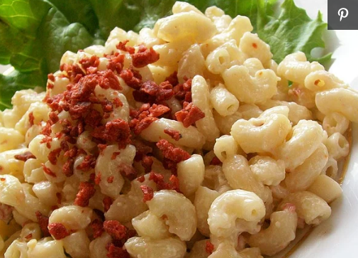

Deb's Macaroni Salad

Description
I had a craving for macaroni salad, and could not find a recipe that suited me, so I came up with my own! Ranch dressing adds tang!
Ingredients
- 2 cups macaroni
- 1 small onion, chopped
- 1 green bell pepper, chopped
- 1 carrot grated
- 1/4cup mayonnaise
- 1/4ranch style dressing
Steps
- Bring a large pot of lightly salted water to a boil. Add pasta and cook for 8 to 10 minutes or until al dente; drain. Rinse with cold water and place in large bowl.
- Add onion, pepper and carrot to bowl with pasta. Toss with mayonnaise and ranch-style dressing. Adjust mayonnaise and dressing to taste. Serve.